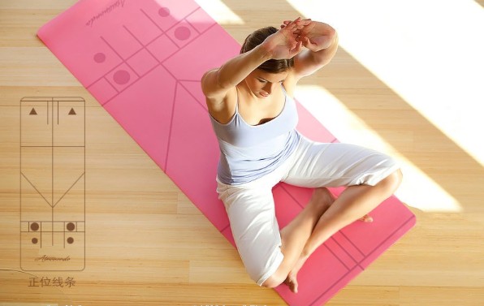

一.正位线条
这是目前瑜伽人选择垫子最重要的一个细节标准。垫面上的正位线条可以引导辅助练习者习炼更正确、更精准的瑜伽体式。正位线条的选择基本上抓住两点就可以了： 首先要看线条的设计原理（即系统的正宗性），其次是否与你的身高相符（正位线条的宽度与长度与你的身体各部位相契合才更精准）。
二.材质
目前市面上的主流瑜伽垫材质一般分为PVC，TPE，天然橡胶，软木，棉麻和混合材质瑜伽垫。如果对于乳胶过敏，要注意甄别标签中是否注明不含乳胶（latex-free）。
1.PVC
优点：耐用性好，原材料成本低，因此价格比较亲民，也是目前使用相对较普遍的瑜伽垫；不含乳胶，适合对乳胶过敏的伽人；材料吸收性差，所以，容易清洁。
不足：因为材料吸收性差，所以干燥情况下防滑性好，但对于流汗多的伽人来说，防湿滑性较差；塑料制品无法自然降解。
2.天然橡胶
优点：原材料来源天然，环保；表面的天然纹理和开孔结构，帮助吸收水分，因此，不论防干滑或湿滑效果都很好。
不足：刚买回来时气味较重；开孔结构容易吸收污渍，需要市场清洗。
3.软木
优点：环保无毒，几乎没有异味；木质更有回归自然的感觉；防干滑和湿滑效果都极佳
不足：价格相对昂贵；木质结构吸收性好，不易清洗。
4.棉麻
优点：亲肤温和不刺激，是热爱传统编制工艺者的首选；容易清洗。
不足：抓地效果差，仅限于动作少的瑜伽课程或者冥想练习，比较较小众。